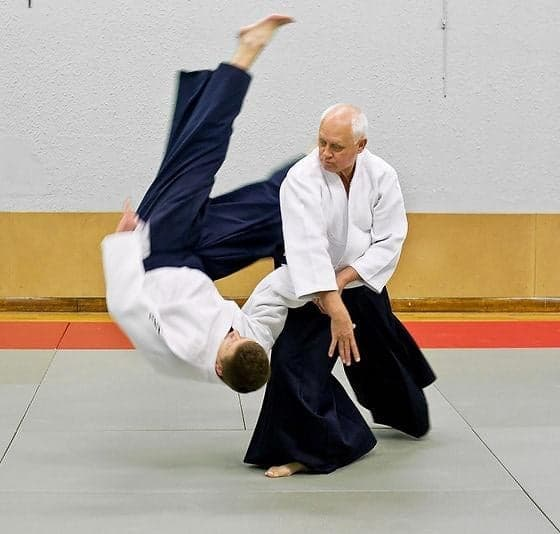
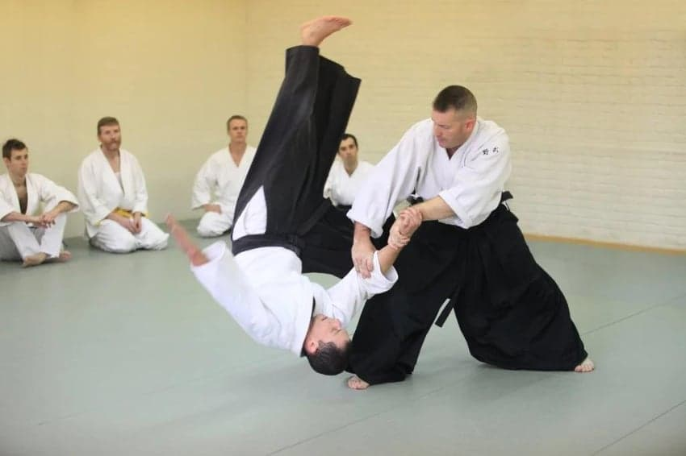
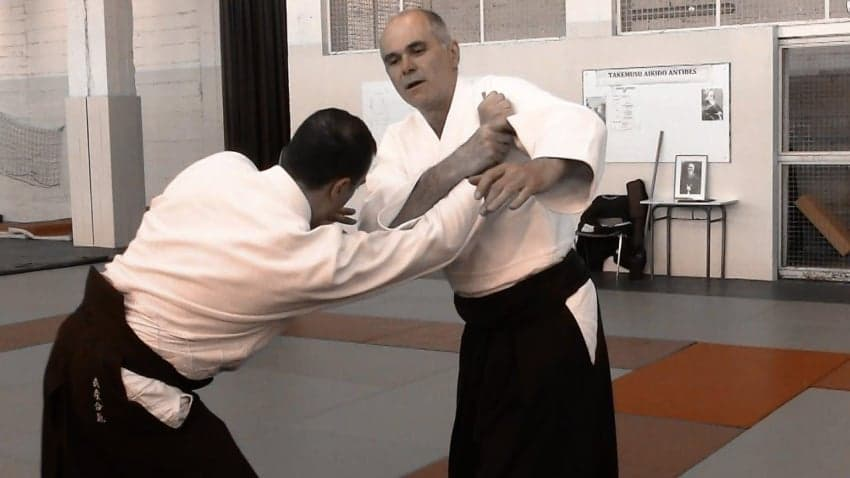
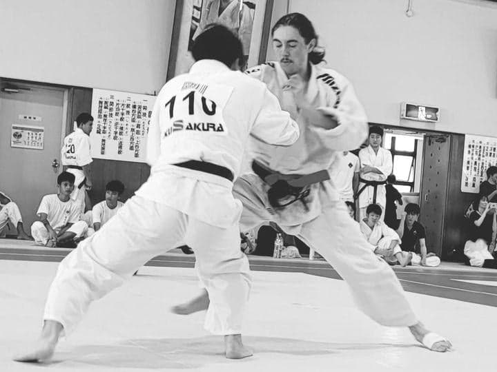
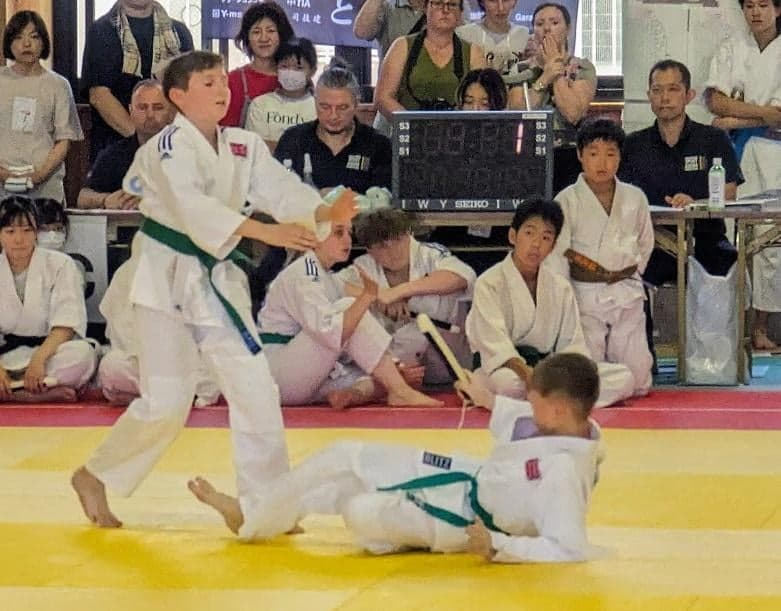
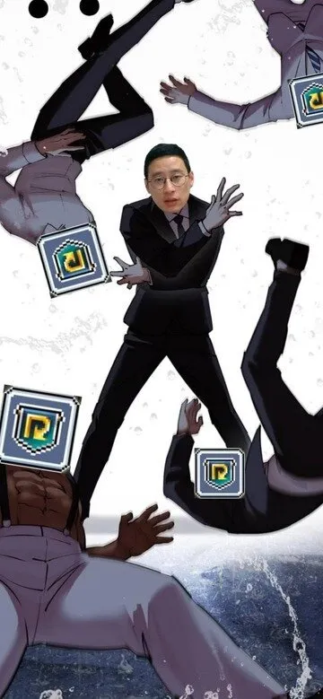
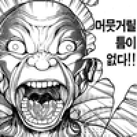
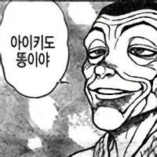

일본에서 탄생한 전통 무술 중 하나인 아이키도(合気道).
상대의 공격을 정면으로 받아내기보다는 힘의 방향을 흘려보내고, 관절기와 던지기를 이용해 상대를 제압하는 것이 특징이다.

상대가 주먹을 휘두르면 가볍게 피하면서 손목을 잡고, 몸의 균형을 무너뜨려 바닥에 내던진다.
마치 상대의 힘을 그대로 이용하는 듯한 모습이다.
그렇다면 과연 아이키도는 실제 싸움에서도 효과가 있을까?
일단 아이키도의 가장 큰 특징은 수련 방식에 있다.

일반적인 아이키도 도장에서는 정해진 공격과 방어 동작을 반복해서 연습한다.
공격자는 정해진 방식으로 공격하고, 방어자는 그에 맞춰 기술을 사용한다.
이때 상대는 기술에 걸리면 낙법을 치며 넘어져 준다.
하지만 실제 싸움에서는 상대가 손목을 잡아주지도 않고, 기술이 들어오면 저항하거나 반격할 수 있다.
특히 복싱이나 레슬링처럼 상대와끊임없이 대련하며 기술을 검증하는 격투기와 비교하면 실전성 측면에서 차이가 발생할 수밖에 없다.
물론 모든 아이키도가 대련을 하지 않는 것은 아니다.

대표적으로 토미키류 아이키도는 다른 계열과 달리 스포츠적인 요소를 도입해 자유 대련과 시합을 진행한다.

단검을 사용하는 공격과 방어를 겨루는 경기 방식도 존재한다.

결론은 아이키도는 실전 무술로서는 분명한 한계가 있는 무술이다.
그렇다고 아이키도가 완전히 쓸모없는 무술이라는 이야기는 아니다.
전통 무술로서의 가치나 관절 제압, 균형 감각 등의 기술은 충분히 의미가 있다.
다만 실제로 저항하는 상대를 제압하는 능력을 기르는 것이 목적이라면, 대련과 실전 검증이 부족한 일반적인 아이키도 수련 방식에는 한계가 존재한다.
결국 전통 무술로서의 가치와 격투 기술로서의 실전성은 구분해서 바라볼 필요가 있다는 것이다.
세줄요약
* 아이키도는 상대의 힘을 흘려보내고 관절기와 던지기로 제압하는 일본 전통 무술이다.
* 하지만 정해진 동작 위주의 수련과 부족한 자유 대련 때문에 실전성에 대한 의문이 꾸준히 제기된다.
* 대련을 도입한 계열도 존재하지만, 일반적인 격투 상황에서 검증된 무술이라고 보기는 어렵다.
- dc official App
댓글
수집 당시 댓글 133개
· ㅇㅇ · 11.14 01:07:10
· 사랑돌이 · 11.14 06:23:10
ㅇㅇ · 11.13 23:05:17
· ㅇㅇ · 11.13 23:06:55
ㅇㅇ · 11.13 23:05:35
ㅇㅇ · 11.13 23:05:37
ㅇㅇ · 11.13 23:05:49
아이들에게 Ai안경을사주자
· ㅇㅇ · 11.13 23:07:15
시험=남의노력을박탈하는제도=ai가죽임
XX · 11.13 23:06:31
ㅇㅇ · 11.13 23:06:40
· ㅇㅇ · 11.13 23:08:33
ㅇㅇ · 11.13 23:07:39
ㅇㅇ · 11.13 23:07:42
펄스 · 11.13 23:07:58
ㅇㅇ · 11.13 23:09:11
· ㅇㅇ · 11.13 23:12:55
ㅇㅇ · 11.13 23:11:40
ㄱㄱㄱㄱ · 11.13 23:12:10
ㅇㅇ · 11.13 23:12:14
ㅇㅇ · 11.13 23:13:22
ㅇㅇ · 11.13 23:14:10
ㅇㅇ · 11.13 23:16:30
ㅇㅇ · 11.13 23:17:17
· ㅇㅇ · 11.13 23:19:30
ㅇㅇ · 11.13 23:17:58
ㅇㅇ · 11.13 23:18:47
· 소설쟁이 · 11.14 00:32:04
ㅇㅇ · 11.13 23:19:03
ㅇㅇ · 11.13 23:25:12
ㅇㅇ · 11.13 23:26:56
ㅇㅇ · 11.13 23:29:55
· 소설쟁이 · 11.14 00:30:02
ㅇㅇ · 11.13 23:34:23
ㅇㅇ · 11.13 23:34:55
ㅇㅇ · 11.13 23:35:20

오메가합참 · 11.13 23:38:19
· 고소 · 11.13 23:55:18
· 오메가합참 · 11.13 23:58:04
· 고소 · 11.13 23:58:27
ㅇㅇ · 11.13 23:39:51
ㅇㅇ · 11.13 23:42:41
dd · 11.13 23:44:50
· 인천폭주딸배 · 11.13 23:56:29
증거를친일천주새끼들 · 11.13 23:50:22
ㅇㅇ · 11.14 00:04:37
dd1234 · 11.14 00:11:04
· 오메가합참 · 11.14 00:18:12
· ㅇㅇ · 11.14 00:45:26
· ㅇㅇ · 11.14 10:47:47
· ㅇㅇ · 11.14 10:48:20
ㅇㅇ · 11.14 00:15:49
말은적게훈련은많이 · 11.14 00:21:52
ㅇㅇ · 11.14 00:22:52
ㅇㅇ · 11.14 00:32:07
ㅇㅇㅇ · 11.14 00:32:25
셱스 · 11.14 00:32:34
· ㅇㅇ · 11.14 01:01:08
· ㅇㅇ · 11.14 01:06:34
· 셱스 · 11.14 01:12:37
· ㅇㅇ · 11.14 01:50:35
ㅇㅇ · 11.14 00:34:57
ㅇㅇ · 11.14 00:50:37
ㅇㅇ · 11.14 00:53:15
ㅇㅇ · 11.14 00:55:38
yhpdoit · 11.14 01:03:42
· ㅇㅇ · 11.14 01:10:18
· yhpdoit · 11.14 01:16:47
(⌒,_>⌒) · 11.14 01:32:06
ㅇㅇ · 11.14 01:32:24
· ㅇㅇ · 11.14 01:33:56
ㅇㅇ · 11.14 02:23:40
ㅇㅇ · 11.14 02:23:47
ㅇㅇ · 11.14 02:42:36
ㅇㅇ · 11.14 02:45:59
ㅇㅇ · 11.14 02:51:56
ㅇㅇ · 11.14 05:46:13
ㅇㅇ · 11.14 05:51:58
ㅇㅇ · 11.14 06:09:22
초등학생이다 · 11.14 06:21:04
ㅇㅇ · 11.14 08:14:05
ㅇㅇ · 11.14 08:18:18
대구박응식36 · 11.14 08:33:52
ㅇㅇ · 11.14 08:42:43
ㅇㅇ · 11.14 08:55:06
ㅇㅇ · 11.14 09:19:03
ㅇㅇ · 11.14 09:23:38
fairys · 11.14 09:36:55

ㅇㅇ · 11.14 09:41:08
ㅇㅇ · 11.14 10:00:40
ㅇㅇ · 11.14 10:02:20
ㅇㅇ · 11.14 10:31:18
ㅇㅇ · 11.14 10:39:47
ㅇㅇ · 11.14 10:46:52
ㅇ · 11.14 11:08:17
ㅇㅇ · 11.14 12:19:51
ㅇㅇ · 11.14 12:25:05
ㅇㅇ · 11.14 14:12:32
클로체 · 11.14 14:17:26
· ㅇㅇ · 11.14 17:37:12
ㅇㅇ · 11.14 17:23:00
한창석과코즈에 · 11.12 00:58:49
ㅇㅇ · 11.12 00:59:12
ㅇㅇ · 11.12 00:59:30
ㅇㅇ · 11.12 00:59:56
· つついあやめのおっと · 11.13 23:27:30
응웅앵 · 11.12 01:02:42
· 메이이 · 11.12 01:03:32
· ㅇㅇ · 11.13 23:24:02
ㅇㅇ · 11.12 01:03:55
· ㅇㅇ · 11.12 01:04:47
· ㅇㅇ · 11.12 01:16:02
· ㅇㅇ · 11.13 23:17:53
· ㅇㅇ · 11.13 23:30:50
· ㅇㅇ · 11.13 23:57:09
· ㅇㅇ · 11.14 11:11:58
낭만원툴 · 11.12 01:11:20
· 고채은 · 11.12 02:14:30
· ㅇㅇ · 11.14 08:59:23
ㅇㅇ · 11.12 01:23:12
정연신 · 11.12 01:36:36
· ㅇㅇ · 11.13 23:01:17
· ㅇㅇ · 11.13 23:07:36
· ㅇㅇ · 11.13 23:08:44
ㅇㅇ · 11.13 23:02:19
ㅇㅇ · 11.13 23:04:08
111111 · 11.13 23:04:30
· ㅇㅇ · 11.13 23:08:33
· 제몸을막만지셨잖아요 · 11.14 02:09:04
ㅇㅇ · 11.13 23:05:02
· ㅇㅇ · 11.13 23:06:19
· ㅇㅇ · 11.13 23:13:00
· ㅇㅇ · 11.13 23:16:32
· 인천폭주딸배 · 11.13 23:51:11